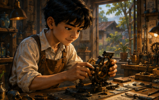
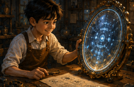
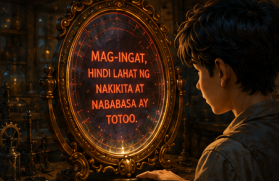
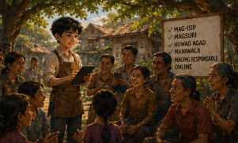
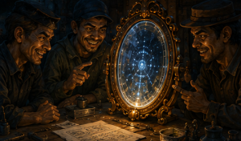
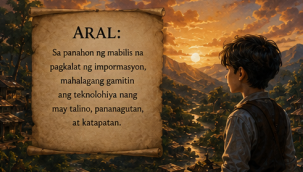

DIGITAL NA ALAMAT
Isang kuwento tungkol sa katotohanan, maling impormasyon, at responsableng paggamit ng teknolohiya.
SIMULAN ANG KUWENTO
Noong unang panahon, sa isang makabagong baryo na tinatawag na Barangay Masinop, may isang batang imbentor na nagngangalang Lino. Bata pa lamang siya ay mahilig na siyang gumawa ng mga bagay na makatutulong sa mga tao.

Napansin ni Lino na maraming tao sa kanilang lugar ang naloloko ng maling impormasyon. Marami ang agad naniniwala sa mga balitang nababasa sa internet kahit hindi naman ito totoo.

Isang araw, gumawa si Lino ng isang kakaibang salamin. Hindi lamang nito ipinapakita ang mukha ng taong tumitingin dito, kundi ipinapakita rin nito kung totoo o hindi ang impormasyong pinaniniwalaan ng isang tao.

Tinawag niya itong Matalinong Salamin. Kapag may taong nagbabasa ng maling balita, magliliwanag ang salamin.

Natuto ang mga tao na magsuri muna bago maniwala at magbahagi ng impormasyon.
May ilang taong gustong gamitin ang Matalinong Salamin para sa pansariling kapakinabangan.

Ang teknolohiya ay maaaring magamit sa kabutihan o kapahamakan depende sa taong gumagamit nito.
Maging mapanuri at responsable sa paggamit ng teknolohiya.